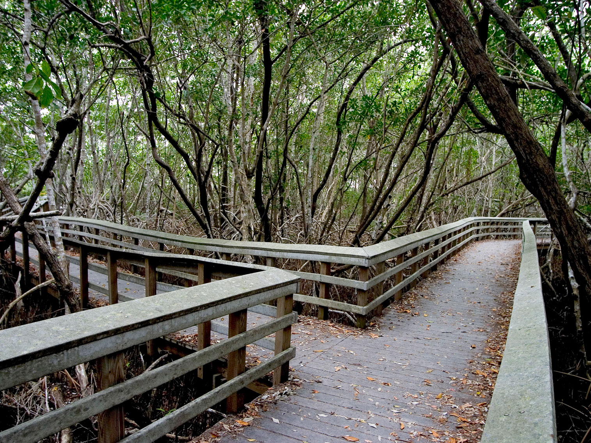
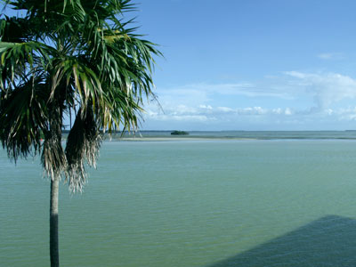
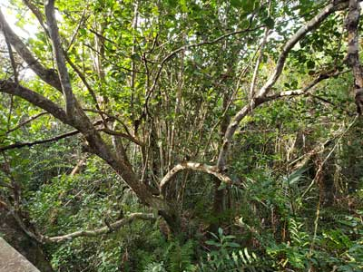
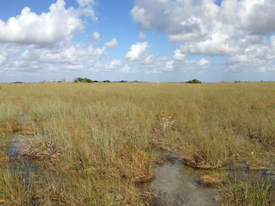
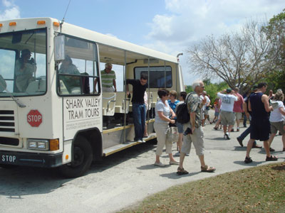
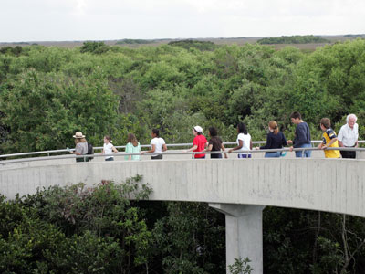
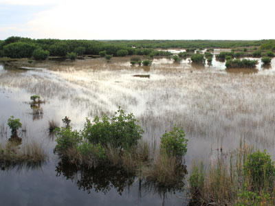
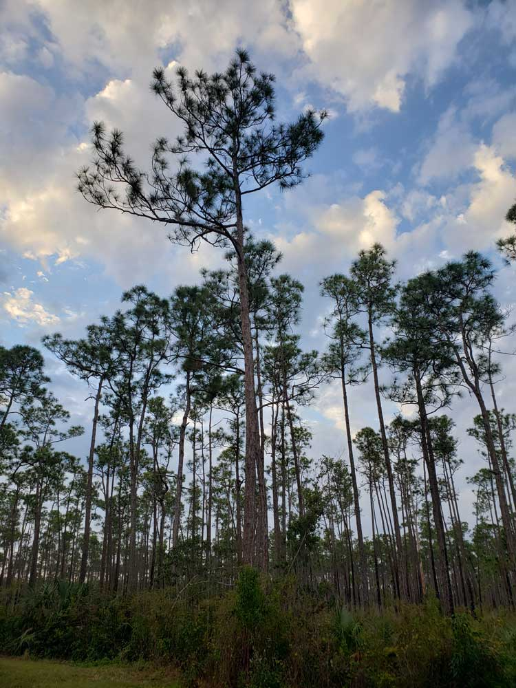
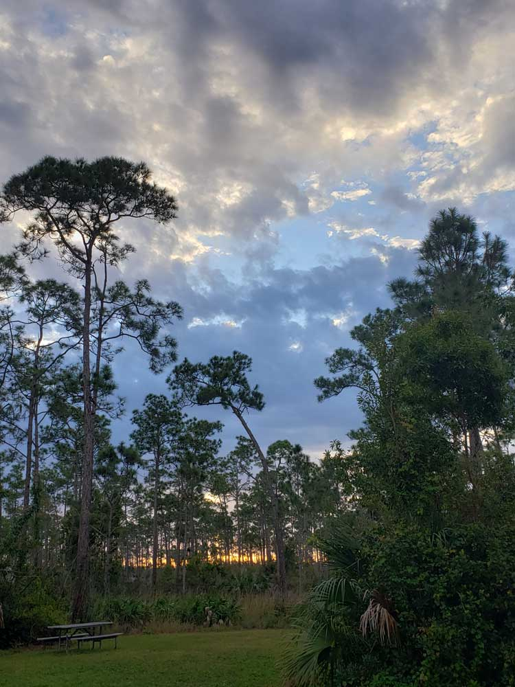

National park protects the southern twenty percent of the original Everglades in Florida, and is the largest tropical wilderness in the United States, and the largest wilderness of any kind east of the Mississippi River
General Information
Main Entrance: This entrance connects visitors to the Royal Palm and Flamingo areas of the park. Open 24 hours a day.
Ernest F. Coe Visitor Center
9am to 5:pm (Mid-April through Mid-December)
8am to 5pm (Mid-December through Mid-April)
Open 365 days a year.
Shark Valley Area: Open daily from 8:30am to 6pm. The park remains open 24 hours, but vehicles do not have access after 6pm.
Shark Valley Visitor Center
Visitor Center: 9amam to 6pm
Everglades City / Naples Entrance
Gulf Coast Area: Open 24 hours a day
Gulf Coast Visitor Center
9am to 5pm (Mid-April through Mid-November)
8am to 5pm (Mid-November through Mid-April)
Flamingo Visitor Center
8am to 4:30pm (mid-November through mid-April).
No regular hours off season (mid-April through mid-November), as the visitor center is staffed intermittently.
Shark Valley Area: There is an entrance fee collected at the gate. Separate fees apply for tram tours and bike rentals.
Gulf Coast Area: There is an entrance fee collected. Separate fees apply for boats tours, and canoe and kayak rentals.
Getting There
To Ernest F. Coe Visitor Center: Continue to Glenvar Heights. Take Ronald Reagan Turnpike to NE 1st Ave in Florida City. Drive to State Hwy 9336. To Shark Valley Visitor Center: Get on I-95 N from S Miami Ave. Take FL-836 W and US-41 W to Shark Valley Loop Rd. Turn left onto Shark Valley Loop Rd.
Overview
Everglades National Park protects the southern fifth of the original Everglades, a slow-moving "river of grass" about 60 miles wide that flows out of Lake Okeechobee toward Florida Bay. It is the largest tropical wilderness in the United States and the largest wilderness of any kind east of the Mississippi River. The park is the most important breeding ground for tropical wading birds in North America and home to the largest mangrove ecosystem in the Western Hemisphere, along with alligators, American crocodiles, West Indian manatees, and the elusive Florida panther. It is a UNESCO World Heritage Site, an International Biosphere Reserve, and a Wetland of International Importance.
Congress authorized the park in 1934, and it was dedicated in 1947, thanks in large part to the work of writer Marjory Stoneman Douglas, whose book The Everglades: River of Grass raised awareness of the area. Today, around a million visitors come each year to see wildlife on boardwalks and boat trips, paddle through mangrove tunnels, and bike or take a tram tour. The park is only about an hour from Miami and is a favorite stop for visitors to South Florida.
Park Sections
The park has three main entrances far from each other. The Ernest F. Coe Visitor Center near Homestead is the main entrance, from which a 38-mile road runs through pine rockland, cypress, and mangroves to Flamingo on Florida Bay, with trails such as Anhinga, Gumbo Limbo, Pa-hay-okee, and Mahogany Hammock along the way. Shark Valley, off US-41 (Tamiami Trail) west of Miami, has a 15-mile loop road with an observation tower. The Gulf Coast entrance, near Everglades City, is the gateway to the Ten Thousand Islands and the 99-mile Wilderness Waterway canoe trail.
Sightseeing and Exploring the Park
The 38-mile Main Park Road is the main scenic drive, with pull-offs and short boardwalks that lead into different habitats, ending at Flamingo with views of Florida Bay. At Shark Valley, the 15-mile paved loop leads to a 65-foot observation tower, which offers a view over the river of grass, and can be explored by foot, bicycle, or a narrated tram tour. From the Gulf Coast, boat tours go through the mangroves of the Ten Thousand Islands and offer views of dolphins, manatees, and birds. Airboat rides are not allowed in the park, but they are offered on private land along the Tamiami Trail.
Hiking
Most Everglades trails are short boardwalks and paved paths, and they are easy and rich in wildlife. The Anhinga Trail (0.8 miles) is the most popular, the Gumbo Limbo Trail (0.4 miles) goes through a tropical hardwood hammock, the Pa-hay-okee Overlook trail (0.25 miles) has a view of the sawgrass prairie, and the Mahogany Hammock Trail (0.5 miles) passes the largest mahogany tree in the country. The Pinelands Trail and the Bobcat Boardwalk are also easy. Longer options include the Snake Bight Trail (about 3.7 miles one way) and the Eco Pond Trail near Flamingo. Long Pine Key has 28 miles of unpaved trails.
Other Activities
Beyond walking, the park is known for paddling and boating. Canoe and kayak trails include Nine Mile Pond, Hell's Bay, and the Wilderness Waterway, a 99-mile route between Everglades City and Flamingo that requires permits. Guided boat tours, including the Everglades National Park guided boat tours from Flamingo and the Gulf Coast, explore the mangrove waterways. Other activities include fishing (with a Florida license), bicycling, camping, ranger-led programs such as slough slogs and canoe trips, stargazing, and birdwatching. Swimming is not recommended, since alligators and crocodiles share the water.
Flora and Wildlife
The Everglades is best known for its wildlife. American alligators are common along the Anhinga Trail and at Shark Valley, and American crocodiles live in the brackish water near Flamingo. West Indian manatees, bottlenose dolphins, and sea turtles live in Florida Bay and the coast, and the Florida panther is critically endangered and very rarely seen. More than 360 species of birds live in or visit the park, including roseate spoonbills, wood storks, great blue herons, and anhingas, and winter is the peak season. The park's plants include sawgrass, mangroves, cypress, pine rockland, and hardwood hammocks.
Access
The Ernest F. Coe entrance is about 45 minutes southwest of Miami, reached by Florida's Turnpike and State Road 9336 near Homestead. Shark Valley is about an hour west of Miami on US-41, and the Gulf Coast entrance at Everglades City is about 1.5 to 2 hours from Miami and 35 miles from Naples. Miami International Airport is the nearest major airport, and Southwest Florida International Airport in Fort Myers is also close. There is no public transportation to the park, so visitors usually drive or join a tour. Cell service is limited in the park.
Seasons
The dry season, from December through April, is the busiest and most comfortable time to visit. Water levels drop, wildlife concentrates at water holes, temperatures and mosquitoes are at their lowest, and birds are most numerous. The wet season, from May to November, is hot, humid, and buggy, with daily thunderstorms and high mosquito numbers, and some trails are flooded. Hurricane season runs from June to November. Some visitor services, including parts of Flamingo and the Shark Valley tram schedule, change by season, so check the National Park Service website.
Camping and Lodging
The park has two main drive-in campgrounds: Long Pine Key, near the main entrance, and Flamingo, at the end of the road, and both offer tent and RV sites, with Flamingo open year-round. Backcountry camping, including chickee platforms and beach sites, requires a permit. Lodging in the park is limited, so check the National Park Service website for current options. Homestead and Florida City, near the main entrance, have chain hotels, such as the Hampton Inn and Best Western, and Everglades City, near the Gulf Coast entrance, has the historic Ivey House. Naples and Miami have a wide range of hotels about an hour or more away.
Visitor Centers
The park has several visitor centers. The Ernest F. Coe Visitor Center at the main entrance has exhibits, a film, and rangers. The Royal Palm Visitor Center is at the start of the Anhinga and Gumbo Limbo Trails. The Flamingo Visitor Center is at the end of the main road and is open mainly in winter. The Shark Valley Visitor Center is at the start of the loop road and has the tram ticket desk, and the Gulf Coast Visitor Center in Everglades City serves the Ten Thousand Islands. Hours vary by season.
This article uses material from the Wikipedia article "Everglades National Park", which is released under the Creative Commons Attribution-Share-Alike License 3.0. Additional information comes from the National Park Service Everglades National Park website.
Featured Locations and Trails

Anhinga Trail
0.8 mile roundtrip, 0.8 feetPopular boardwalk trail through sawgrass wetlands offering close-up views of alligators, wading birds, and one of the park’s most iconic ecosystems.

Everglades NPS from Homestead, Florida, United States, Public domain, via Wikimedia Commons; Image Size Adjusted
.jpg){kind=link}
Bobcat Boardwalk
Short boardwalk trail through wetlands offering close-up views of wildlife, slow-moving water, and classic Everglades scenery.
Everglades NPS from Homestead, Florida, United States, Public domain, via Wikimedia Commons; Image Size Adjusted
Buttonwood Canal
Mangrove-lined canal waterway connecting coastal bays with inland lakes, offering a tranquil setting for boating and wildlife viewing.
Eco Pond Trail
0.5 mile roundtrip, 3 feetShort loop trail around a freshwater pond offering excellent opportunities to observe birds, reptiles, and wetland wildlife in a changing ecosystem.
Everglades NPS from Homestead, Florida, United States, Public domain, via Wikimedia Commons; Image Size Adjusted
Everglades National Park Guided Boat Tours
Guided boat excursions through winding mangrove waterways and open bays showcasing wildlife, coastal scenery, and remote backcountry areas.

Moni3, Public domain, via Wikimedia Commons

Flamingo
Remote coastal hub offering access to mangrove backcountry, open bays, and abundant wildlife in the southernmost part of the park.
Everglades NPS from Homestead, Florida, United States, Public domain, via Wikimedia Commons; Image Size Adjusted
Florida Bay
Vast coastal lagoon of shallow water and mangrove islands where the Everglades meets the ocean, creating a rich and dynamic marine ecosystem.
Gumbo Limbo Trail
0.4 mile round trip, 0 feetShaded boardwalk trail through dense tropical hardwood forest featuring unique plant life and a cool, jungle-like atmosphere.

Hells Bay (Canoe / Kayak Trail)
Mahogany Hammock Trail
0.4 mile round trip, 0 feetShort elevated boardwalk leading through a dense tropical hammock forest to one of the largest mahogany trees in the United States.
Everglades NPS from Homestead, Florida, United States, Public domain, via Wikimedia Commons; Image Size Adjusted
Nike Missile Base HM69
Cold War missile site hidden in the Everglades, offering a rare glimpse into nuclear defense history surrounded by remote wetlands.
Nine Mile Pond (Canoe / Kayak Trail)
Scenic freshwater pond and paddling trail offering a peaceful mix of open water, marsh habitat, and abundant Everglades wildlife.

Fredlyfish4, CC BY-SA 3.0, via Wikimedia Commons; Image Size Adjusted

Pa-hay-okee Overlook Trail
0.16 mile roundtrip, 0 feetElevated overlook offering sweeping views across the Everglades’ vast sawgrass marsh and distant tree islands.
Pinelands Trail
0.4 mile roundtrip, 0 feetShort interpretive trail through open pine forest showcasing one of the Everglades’ distinct upland ecosystems.

NancyHeise, Public domain, via Wikimedia Commons; Image Size Adjusted

Shark Valley
Long, straight paved road through open marshland leading to a panoramic observation tower with sweeping Everglades views and abundant wildlife.
Snake Bight Trail
3.2 miles roundtrip, 3 feetQuiet out-and-back trail leading through coastal prairie and buttonwood forest to a remote shoreline along Florida Bay.

Everglades NPS from Homestead, Florida, United States, Public domain, via Wikimedia Commons; Image Size Adjusted
,_NPSPhoto_(9255480841).jpg){kind=link}
Shark Valley
Geological depression at the head of the Shark River Slough that empties into Shark River in the Ten Thousand Islands of Monroe County, and is part of Everglades National Park

Stefan.witz, CC0, via Wikimedia Commons; Image Size Adjusted

Ten Thousand Islands
Vast maze of mangrove islands and coastal waterways forming one of the most remote and ecologically rich areas of the Everglades.
West Lake Trail
0.5 mile roundtrip, 0 feetPeaceful boardwalk trail through mangrove forest leading to open water views along a coastal lake teeming with wildlife.

